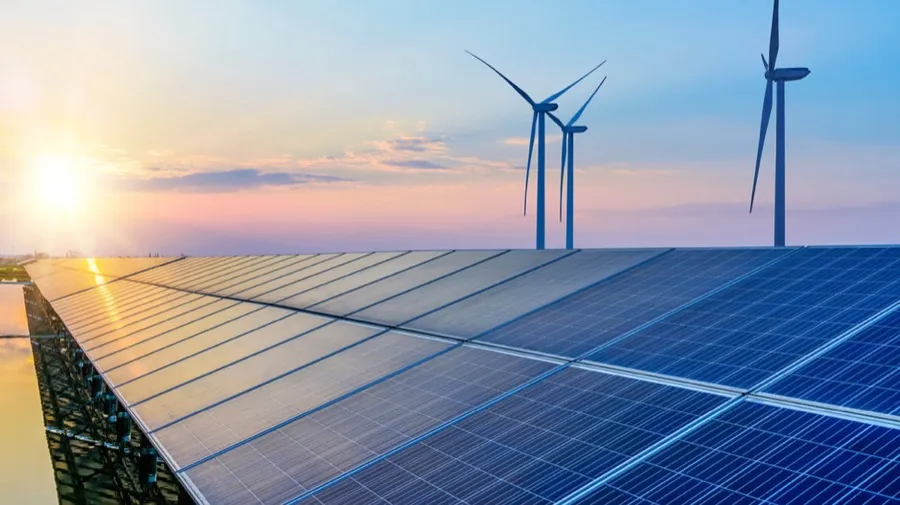

O Antropoceno é uma era geológica proposta para descrever a época em que os seres humanos começaram a ter um impacto significativo no meio ambiente do planeta Terra. É uma palavra que deriva do grego anthropos, que significa homem, e kainos, que significa novo.
O termo Antropoceno é frequentemente usado para descrever a era atual em que vivemos, em que a atividade humana tem um impacto significativo em várias áreas do meio ambiente, incluindo mudanças climáticas, desmatamento, poluição e perda de biodiversidade.
O Antropoceno é uma era preocupante, pois muitas das mudanças que estão ocorrendo atualmente no meio ambiente são irreversíveis. No entanto, isso também significa que temos a responsabilidade de fazer mudanças positivas para reduzir o nosso impacto e proteger o planeta para as gerações futuras.
Para combater as mudanças climáticas e proteger o meio ambiente, é importante que as pessoas em todo o mundo se unam para encontrar soluções. Isso pode incluir reduzir a emissão de gases de efeito estufa, aumentar a utilização de energia renovável, conservar a água e promover a reciclagem e a sustentabilidade.
Em suma, o Antropoceno é um lembrete importante de que a nossa relação com o meio ambiente é interdependente e que temos a responsabilidade de proteger o planeta para as gerações futuras.